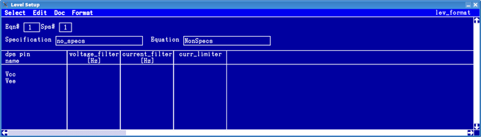

How to read the DPS Setup window
To select the DPS Level Setup, on the menu, click
Part 1:

Part 2:

Part 3:

For details on the DPS settings, see DPSPINS resources and Setting up the Device Power Supply.
To see the voltage ramp specific columns you may need to scroll to the right. For further details on the additional voltage ramp specific columns, see DPS pins with voltage ramps.
| Parameter | ||
|---|---|---|
| dps pin name | Names of the DUT power pins (type dps+ or dps-) that you have defined in the Pin configuration tool or imported. As with the I/O pins, you cannot edit the DPS pin names in this window. | |
| level | [V] | Voltage level |
| current source | [A] | Source current limit |
| current sink | Sink current limit | |
| off cur. | Off current: current to apply if the DPS pin is disconnected | |
| V Range | [V] | Voltage range |
| I Range | [A] | Current range |
| V Bump | [V] | VBump state (off/on) and level |
| rise rate | [ms/V] | The inverse slew rate for the rising edge in ms/V for connect and disconnect cases. |
| rise settm | [ms] | The settling time for the rising edge in milliseconds [ms] for connect and disconnect cases. |
| fall rate | [ms/V] | The inverse slew rate for the falling edge in ms/V for connect and disconnect cases. |
| fall settm | [ms] | The settling time for the falling edge in milliseconds [ms] for connect and disconnect cases. |
| rise rate c2c | [ms/V] | The inverse slew rate for the rising edge in ms/V for "connect-to-connect" cases. |
| rise settm c2c | [ms] | The settling time for the rising edge in milliseconds [ms] for "connect-to-connect" cases. |
| fall ratec2c | [ms/V] | The inverse slew rate for the falling edge in ms/V for "connect-to-connect" cases. |
| fall settm c2c | [ms] | The settling time for the falling edge in milliseconds [ms] for "connect-to-connect" cases. |
| Tsetup | [ms] | The connect setup time (from the connect of a pin to a common connect reference time point) for rising and falling edges in milliseconds [ms]. Cannot be used with the other (dis)connect parameters above. |
| cc check | Constant current check (on/off) | |
| conn state | Connect state | |
| curr_limiter | The integrated current limiter protection mode of the UHC4T allows
you to avoid the switch-off of the system. This parameter is currently supported only by the DC Scale UHC4T card. For more information refer to UHC4T specific setup tasks. |
If you use a master/slave DPS arrangement, you can increase the maximum current on a DPS pin to the total supplied by all of the power supplies connected to that pin.
Information on setting capacitive loads for DPS pins can be found in >Load capacitors connected to the DPS.
Functional changes
- Introduced before SmarTest 6.3.2
- SmarTest 7.3.1: New parameters voltage_filter and current_filter added.
- SmarTest 7.3.2: New parameter curr_limiter added.